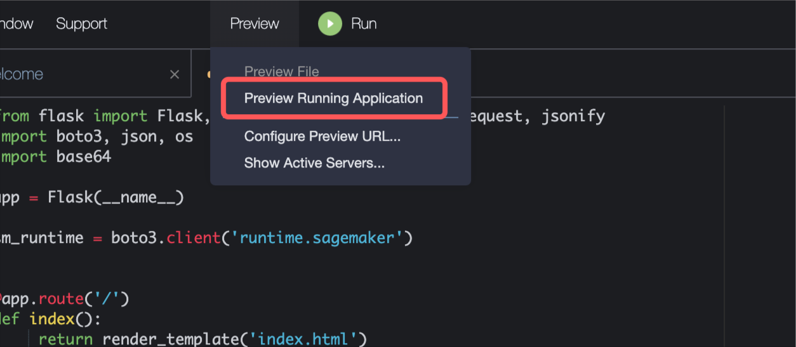

End-to-End AIGC - from Amazon Sagemaker to Web Application
Use Amazon Sagemaker, Cloud 9, S3, Huggingface to Deploy Diffusion Model as a Flask Web APP
1 Introduction
In this camp, you will learn from Amazon SageMaker and AWS Cloud 9 to: - evaluate AIGC models with Amazon SageMaker Notebook - deploy AIGC model to Amazon SageMaker Inference Endpoint - develop web app by AWS Cloud 9 and call SageMaker Inference Endpoint
Follow this tutorial, you will get a web app with AIGC capability.


2 Prerequisites
If you hope to deploy your AIGC model to Amazon SageMaker Inference Endpoint, and call the endpoint with a web app, please make sure you have enough quotas.
2.1 Check the Quota
Search ml.g4dn.xlarge for endpoint usage
2.2 Increase the Quota
If the quota value is 0, select ml.g4dn.xlarge for endpoint usage and click the Request quota increase orange button at the upper right corner.
2.3 Set the Quota
Enter the quotas you want, for example, 1. Then click request orange button.
3 Create Amazon Sagemaker Notebook Instance
3.1 Login Amazon Console
Click the link, make sure the region is Tokyo, ap-northeast-1

3.2 Enter Amazon Sagemaker
Search Amazon Sagemaker.
3.3 Enter Amazon Sagemaker Notebook Instance
On the left side, click notebook instance to enter the console.
3.4 Create a Notebook Instance
Click the orange button Create a Notebook Instance at the upper right corner.
3.5 Config the Notebook Instance
3.6 Create IAM Role
You have to create an IAM role to call the SageMaker and S3 service, for example, upload and deploy a model.
3.7 Create a Notebook Instance and Open Jupyter Notebook
3.8 Download and Upload Notebook File
Open this link, and download the notebook file.
This notebook file contains: - download and test AIGC model - wrap the model and upload it to S3 bucket - deploy the model from S3 to SageMaker Inference Endpoint
4 Create Full-Stack APP in AWS Cloud 9
AWS Cloud9 is an IDE on cloud that enables us to write, run and debug code.
4.1 Enter Cloud9 Service
Search Cloud9
4.2 Create Cloud9 Environment
Set a app name and keep the other setting default. Click the orange button at the lower right corner to create the environment.
4.3 Open Cloud9 Environment
4.4 Download and Upload Web App
Enter the command in the below Cloud9 console to download and save web app zip file and unzip the file.
cd ~/environment
wget https://static.us-east-1.prod.workshops.aws/public/7310ecbe-558d-4f72-81de-4da07aa4180e/static/code/SampleWebApp.zip
unzip SampleWebApp.zipAfter unzip, you will get a SampleWebApp folder which contains: - Backend code app.py: receive frontend request and call SageMaker Endpoint to generate images with texts. - Frontend code image.html and index.html.
4.5 Install Flask and boto3 on AWS Cloud9
Enter the command in the below Cloud9 console.
pip3 install Flask
pip3 install boto34.6 Run app.py
4.7 Preview frontend web page

4.8 Enter a Prompt to Generate Images
Examples: set length and width to 512 and enter a discriptive sentence to generate a cartoon-style monkey astronaut and a superhero.
a cartoon style cute monkey wearing a space suit, star background; clear portrait of a superhero concept between spiderman and batman, cottagecore 
5 Summary
We have open a Amazon SageMaker Notebook and upload a notebook file to run and test an AIGC model. We then deploy the model to Amazon Sagemaker Inference Endpoint and create a web app on Cloud9 to call the endpoint.
To avoid charges, please clean up the resources in the experiment. Delete the Cloud9 environment, S3 bucket, SageMaker Notebook, Endpoint and Model by following these links.